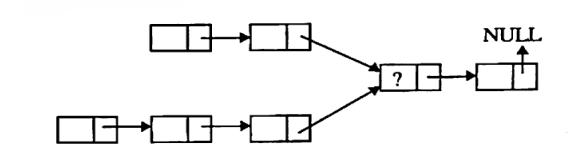
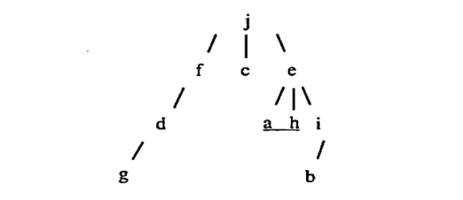
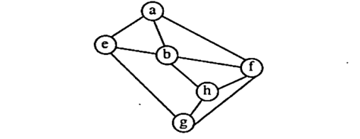

Rajiv Gandhi Proudyogiki Vishwavidyalaya, Bhopal
New Scheme Based On AICTE Flexible Curricula
Computer Science & Information Technology | III-Semester
Unit 1: Introduction
Data, data type, data object. Types of data structure – primitive & non-primitive , linear & non-linear. Operations on data structures – traversing, searching , inserting , deleting. Complexity analysis – worst case, best case, average case. Time – space trade off , algorithm efficiency, asymptotic notations – big oh , omega , theta.
Previous Years questions appears in RGPV exam.
Q.1) What is Data structure? Write a brief note on classification of data structure. (Dec-2024)
Q.2) What do you mean by algorithmic complexity? Explain Time complexity and space complexity in brief. (Dec-2024)
Q.3) Define Data Structures. With the aid of a neat diagram describe the classification of data structures. (Dec-2023)
Q.4) What is asymptotic analysis? Explain Big-oh notation. Analyse and write the running time complexity of the following function: (Dec-2023) $$ \begin{aligned} &A() \{ \\ &\quad \text{int } i, j, k, n; \\ &\quad \text{for}(i=1; i<=n; i++) \\ &\quad \quad \text{for}(j=1; j*j<=n; j++) \\ &\quad \quad \quad \text{for}(k=1; 2*k<=n; k++) \\ &\quad \quad \quad \quad \text{printf("*");} \\ &\} \end{aligned} $$
Q.5) How do you find the complexity of an algorithm? What is the relation between the time and space complexities of an algorithm? Justify your answer with an example. (Nov-2022)
Expected Sample Questions for Future Exams
Q.1) Explain the Time-Space trade-off in data structures with a suitable example. (Predicted)
Q.2) Define Asymptotic Notations. Differentiate between Big Oh ($O$), Omega ($\Omega$), and Theta ($\Theta$) notations with graphical representation. (Predicted)
Q.3) Distinguish between Primitive and Non-Primitive data structures with examples. (Predicted)
Q.4) Define Abstract Data Type (ADT). Explain its importance in data structure design. (Predicted)
Q.5) What is an Algorithm? Explain the key characteristics of a good algorithm. (Predicted)
Unit 2: Arrays & Structure
Introduction , declaration of arrays , operations on arrays – inserting , deleting , merging of two arrays , 1 dimensional & 2 dimensional arrays, row & column major representation , address calculation in array , storing values in arrays , evaluation of polynomial – addition & representation. Searching & sorting – Introduction , sequential search, binary search , Fibonacci search , indexed sequential search, hashed search. Types of sorting with general concepts – bubble, heap , insertion , selection, quick , heap , shell , bucket , radix and merge sort.
Previous Years questions appears in RGPV exam.
Q.1) Explain Insertion sort in details. Write an algorithm for it. Discuss the complexity of insertion sort. (Dec-2024)
Q.2) What is max heap? Write an algorithm to perform heap sort. Give example. (Dec-2024)
Q.3) Suppose you have an array with the following elements: [22, 7, 2, 9, 8, 15, 13, 3, 11]. What will be the result of sorting this array using the quicksort algorithm with the first element as the pivot? (Dec-2024)
Q.4) How do you implement binary search recursively? (Dec-2024)
Q.5) How does the size of the input array affect the time complexity of linear search and binary search? (Dec-2024)
Q.6) Given an array with both positive and negative numbers, find the two elements such that their sum is closest to zero. Example: 1, 60, 10, 70, -80, 85. Also discuss the complexity. (Dec-2023)
Q.7) Consider a two-dimensional array A of order $[20 \times 5]$. The base address is 840, words per memory cell is 8. Find the address of A[15, 3] using row major and column major addressing. (Dec-2023)
Q.8) Show the steps of quick sort on the following set of elements. 26, 56, 47, 36, 13, 95, 85, 32. Assume the last element as the pivot element. (Dec-2023)
Q.9) What is collision? What are the methods to resolves collision? Using the hash function 'key mod 7', insert the following sequence in the hash table: 32, 50, 700, 140, 76, 85, 46, 92, 70, 73 and 101. Use separate chaining. (Dec-2023)
Q.10) What are the merits and demerits of array? Given two arrays of integers in ascending order, develop an algorithm to merge these arrays to form a third array sorted in ascending order. (Nov-2022)
Q.11) Given a 2D array A[-100, 50:-5, 50]. Find the address of element A[99, 49] considering the base address 10 and each element requires 4 bytes. Follow row major order. (Nov-2022)
Q.12) Write an algorithm of Heap sort. Sort the given sequence: 50, 48, 35, 44, 80, 70, 10, 55, 11, 85. (Nov-2022)
Q.13) Differentiate between linear search and binary search techniques. Write a C program to search an element in an array using binary search. Also write its time complexity. (Nov-2022)
Expected Sample Questions for Future Exams
Q.1) Explain Bubble Sort with an example. Derive its worst-case and best-case time complexity. (Predicted)
Q.2) Discuss the concept of Hashing. Explain the different Hash functions and collision resolution techniques. (Predicted)
Q.3) Explain how polynomial addition is represented and performed using arrays. (Predicted)
Q.4) Write the Quick Sort algorithm. Sort the array {40, 20, 10, 80, 60, 50, 7, 30} and show the partition at each step. (Predicted)
Q.5) Derive the formula for Address Calculation in a 2D Array for both Row Major and Column Major Order. (Predicted)
Unit 3: Stacks & Queues
Basic concept of stacks & queues, array representation of stacks, operation on stacks – Push , Pop , Create , getTop , empty , linked representation of stack , multiple stack. Application of stack – Conversion: infix , prefix , postfix and evaluation of arithmetic expression. Linked representation of queue, operations on queue – insertion & deletion. Types of queue with functions – circular , deque , priority queue. Applications of queues – Job scheduling , Josephus problem.
Previous Years questions appears in RGPV exam.
Q.1) Evaluate the post fix expression using stack: $8 \quad 3 \quad 4 \quad + \quad - \quad 3 \quad 8 \quad 2 \quad / \quad + \quad * \quad 2 \quad \$ \quad 3 \quad +$. (Dec-2024)
Q.2) Suppose you have a queue: [10, 20, 30, 40, 50]. What is the result of dequeuing two elements, enqueueing 60, 70, 80, and dequeuing one more? (Dec-2024)
Q.3) How can you implement a queue using two stacks, and what are the advantages and disadvantages of this approach? (Dec-2024)
Q.4) Define the properties of circular queue. How will you check whether the circular queue is Full or Empty? (Dec-2024)
Q.5) Write short note on: Application of queue. (Dec-2024)
Q.6) Define Stack. What are the different operations performed on stack. Explain why Stack is a recursive data structure? (Dec-2023)
Q.7) Write an algorithm for evaluating a postfix expression and apply it for: $4-5^{*}+77/+$. (Dec-2023)
Q.8) Explain the importance of queue. Describe why it is a bad idea to implement a linked list version of a queue which uses the head of the list as the rear. (Dec-2023)
Q.9) What is the advantage of circular queue over ordinary queue? Write a C program to simulate circular queue (Insert, Delete, Display). (Dec-2023)
Q.10) Design a data representation which sequentially maps 'n' data objects into an array a[1, n], $n_1$ are stacks and remaining are queues. (Dec-2023)
Q.11) Write an algorithm for the evaluation of a postfix expressions. (Nov-2022)
Q.12) Convert the following infix expression to prefix and postfix using stack: $((2+3)*4+(5*(6+7)*9))$. (Nov-2022)
Q.13) What do you mean by stack? What do you mean by overflow and underflow condition? Write an algorithm/C function for push and pop operations. (Nov-2022)
Expected Sample Questions for Future Exams
Q.1) What is a Priority Queue? Explain its array representation and utility. (Predicted)
Q.2) Explain the Tower of Hanoi problem and how it illustrates the application of Recursion/Stack. (Predicted)
Q.3) Write an algorithm to convert a given Infix expression into a Postfix expression using a Stack. (Predicted)
Q.4) Differentiate between Linear Queue and Circular Queue. Why is Circular Queue preferred? (Predicted)
Q.5) Explain Double Ended Queue (Deque). List the different input/output restricted deques. (Predicted)
Unit 4: Linked List
Introduction – basic terminology, memory allocation & deallocation for linked list. Linked list variants – head pointer , head node , types linked list – linear & circular linked list. Doubly linked list , creation of doubly list, deletion of node from doubly linked list, insertion of a node from doubly linked list, traversal of doubly linked list. Circular linked list – singly circular linked list , circular linked list with header node , doubly circular linked list. Applications of linked list – polynomial representation & garbage collection.
Previous Years questions appears in RGPV exam.
Q.1) Explain and implement a singly linked list with an example? (Dec-2024)
Q.2) Write short note on: Doubly circular linked list. (Dec-2024)
Q.3) What is a link list? Discuss advantages; write various operations with time complexities. (Dec-2023)
Q.4) Suppose there are two singly linked lists both of which intersect. Give an algorithm for finding the merging point and write the running time complexity. (Dec-2023)

Q.5) What are the advantages of linked list over array? Write an algorithm/C code to insert a node at the end of a singly linked list. (Nov-2022)
Q.6) Write an algorithm/C program that reverses the order of all the elements in a singly linked list. (Nov-2022)
Q.7) Show the addition of given polynomials using linked list: $P=3x^{2}+2x+7$ and $Q=5x^{3}+2x^{2}+x$. (Nov-2022)
Q.8) Explain Garbage collection and compaction. (Nov-2022)
Expected Sample Questions for Future Exams
Q.1) Write an algorithm to reverse a Singly Linked List. (Predicted)
Q.2) Write an algorithm to delete a node from a Doubly Linked List at a specific position. (Predicted)
Q.3) Explain the concept of a Circular Linked List with a Header Node. What are its advantages? (Predicted)
Q.4) Explain how polynomial multiplication can be implemented using Linked Lists. (Predicted)
Q.5) Discuss Dynamic Memory Allocation. Explain `malloc`, `calloc`, and `free` functions with respect to Linked Lists. (Predicted)
Unit 5: Trees
Basic terminology – general tree , representation of general tree, types of trees, binary tree- realization and properties , traversal in binary trees – inorder , preorder , postorder , applications of trees. Graph- Basic Terminologies and representations, Graph search and traversal algorithms.
Previous Years questions appears in RGPV exam.
Q.1) Construct a binary tree whose preorder and postorder traversal are given. (Dec-2024)
Q.2) Insert the set of elements {30, 40, 24, 58, 48, 26, 11, 13} to construct a binary search tree starting from a null tree. Draw the tree for each step. (Dec-2024)
Q.3) Write short note on: BFS and DFS. (Dec-2024)
Q.4) What are L-L, L-R and R-R rotation? Write procedure for adding and deleting a node from the balanced tree. (Dec-2023)
Q.5) What is the sequence of nodes visited for the following tree for a preorder, postorder, and breadth first traversal? (Dec-2023)

Q.6) What is Graph traversal? Discuss the difference between traversing a graph and a tree. Identify Depth-First Traversals for the given graph. (Dec-2023)

Q.7) What is Tree data structure? What are the different types of tree? (Nov-2022)
Q.8) Show that the maximum number of nodes in a binary tree of height h is $2^{h+1}-1$. (Nov-2022)
Q.9) Explain DFS and BFS algorithm supporting with the example. (Nov-2022)
Q.10) Construct a binary tree for given Sequence (Inorder and Postorder). (Nov-2022)
Expected Sample Questions for Future Exams
Q.1) Explain Binary Search Tree (BST). Write an algorithm to search for an element in a BST. (Predicted)
Q.2) Define Graph. Explain Adjacency Matrix and Adjacency List representation of graphs. (Predicted)
Q.3) Explain Threaded Binary Tree and its advantages over a normal Binary Tree. (Predicted)
Q.4) Differentiate between Breadth First Search (BFS) and Depth First Search (DFS) with examples. (Predicted)
Q.5) Define Binary Tree. Differentiate between Complete Binary Tree and Full Binary Tree with diagrams. (Predicted)